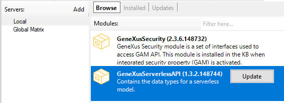
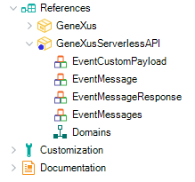
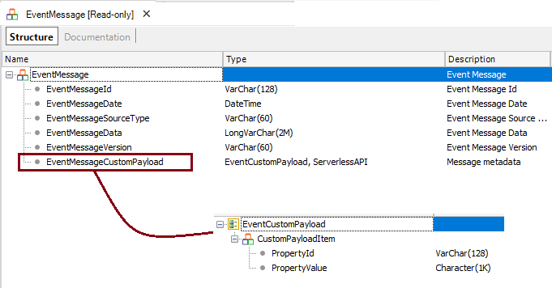
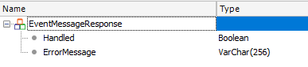
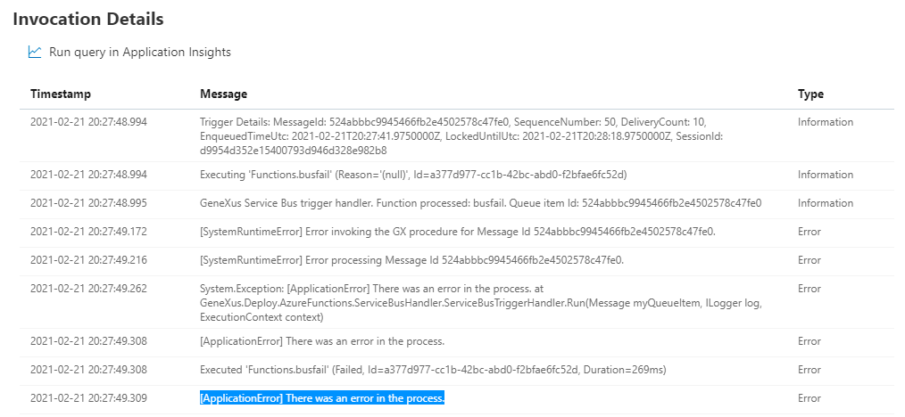

How to: create a GeneXus procedure to be deployed as an Azure Function
Some Azure functions (other than the Http-triggered functions) may require parameters to be executed.
When the Azure runtime invokes a function (the function is triggered), it receives information related to the event that happened (e.g: the message that was received from a queue in a Queue Storage or a Service Bus function, or the blob that was stored in a Blob storage).
This information is needed inside the GeneXus procedure to program the logic of the function.
Therefore, in order to create a GeneXus procedure that will be deployed as a function, you should consider some aspects regarding the parameters of the procedure that are explained in this document.
Note : This is valid for functions whose trigger type is Service Bus, Queue, and Timer.
 The GeneXus procedures have to be main (call protocol = Internal).
The GeneXus procedures have to be main (call protocol = Internal).
Install the GeneXusServerlessAPI module
First, import into the knowledge base the external module called "GeneXusServerlessAPI." This module contains the definitions of the SDTs necessary to be passed as parameters to the function.


The parm rule can be any of the following:
parm(in:&EventMessages,out:&EventMessageResponse); parm(in:&RawData,out:&EventMessageResponse); // RawData is a char parameter
About EventMessage SDT
The header of EventMessage allows getting from the Azure function all the information of the event (such as its ID).
The item EventMessageCustomPayload is a property-value structure, where you can retrieve the body of the message, including its metadata. It's a dynamic structure to support any kind of message, regardless of the trigger type of the function.

Note: If you want to receive the message in a JSON string, use in:&RawData character parameter.
About EventMessageResponse SDT
The EventMessageResponse has the following structure:

See Error Handling below for more details.
Example
The following is an example of code where the EventMessage is processed.
for &EventMessage in &EventMessages.EventMessage
&MessageInfo = format(!"Id : %1, Source : %2, Version : %3, Date : %4, Data : %5"
,&EventMessage.EventMessageId
,&EventMessage.EventMessageSourceType
,&EventMessage.EventMessageVersion
,&EventMessage.EventMessageDate
,&EventMessage.EventMessageData)
//Process the message properties.
//This is a dynamic structure (property-value) which depends on the type of message and the provider.
for &CustomPayloadItem in &EventMessage.EventMessageCustomPayload
&CustomPayload += format(!"%1:%2 %3 ",&CustomPayloadItem.PropertyId,&CustomPayloadItem.PropertyValue, "-")
endif
endfor
endfor
&myQueueItem = format(!"*Message Info*--> '%1'. *CustomPayload*--> %2.",&MessageInfo,&CustomPayload)
Deploy
To deploy the procedure as a function, use the deployment tool. See Deploy to Azure Functions.
Error Handling
To avoid lost events, error handling is a very important issue to consider. This is for exceptions that require that the function is executed again until the maximun number of retries is reached.
Each type of function has its own management of retries and error handling in its infrastructure. According to the MS documentation, a retry policy can be defined for all functions in an app using the host.json file.
This file is added to the deployment package with basic settings. You have to modify it to your needs and include it as a file if you want.
In the GeneXus procedure, if the application fails for any reason, you should try to catch the error and assign the EventMessageResponse output parameter with an ErrorMessage and the Handled element set to FALSE.
If &isError
&EventMessageResponse.Handled = FALSE
&EventMessageResponse.ErrorMessage = "There was an error in the process."
Endif
In this case, the error is thrown to the Azure runtime so the function can retry all the times it is configured to do so. In the case of Queue Storage or Service Bus, and if none of the retries is successful, the message is sent to a Poison queue or dead letter, respectively.
In this case, in the monitor of Azure cloud you will see the error as an Application Error:

Availability
Since GeneXus 17 upgrade 3
See also
| Backlinks | ||
| Azure timer triggered functions | Deploy to Azure Functions | Service Bus and Queue Storage triggered Azure functions |